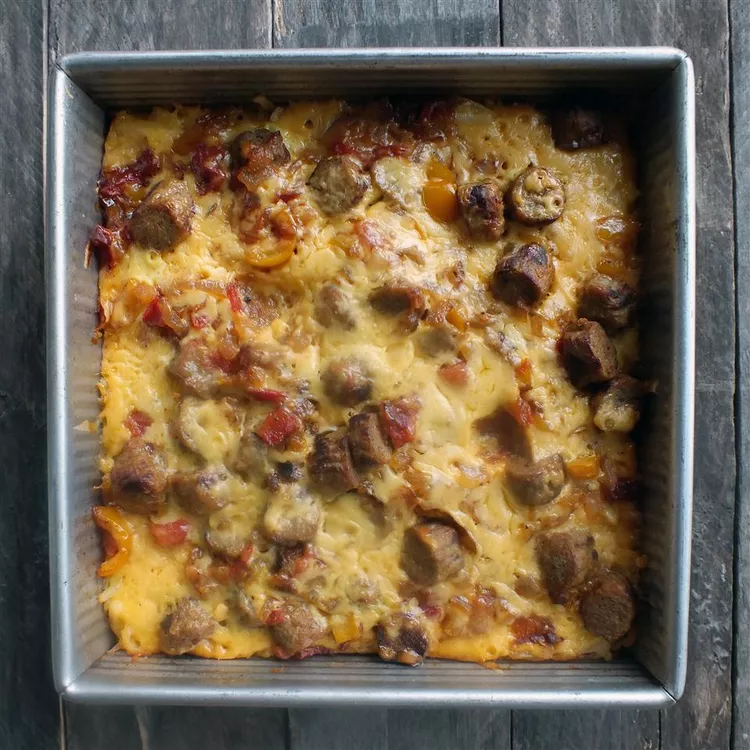

Best Breakfast Casserole (Hash Browns & Eggs)

Hash Browns, Sausage & Eggs Casserole!
This breakfast casserole with hash browns is my family's recipe that has been handed down through the years.
We've always used the maple-flavored pork sausage but any kind is good.
This casserole is a nice and cozy breakfast or brunch meal that everyone will enjoy.
It's got the perfect taste with lots of cheese. Yum!
Be sure to use a baking dish that is deep enough to cover with aluminum foil.
Ingredients
- 1 (2 pound) package frozen hash brown potatoes, thawed
- 1 pound pork sausage
- 1 small onion, diced
- 5 eggs
- ½ cup milk
- ½ teaspoon onion powder
- ⅛ teaspoon garlic powder
- salt and ground black pepper to taste
- 12 ounces shredded Cheddar cheese
Directions
- Preheat the oven to 350 degrees F (175 degrees C). Grease an 8-inch square pan; add hash brown potatoes and arrange in an even layer.
- Place sausage and onion in a large skillet over medium heat. Cook and stir until the sausage is browned and crumbled, about 10 minutes; drain.
- Meanwhile, whisk eggs, milk, onion powder, garlic powder, salt, and pepper together in a large bowl until well combined; pour over the potatoes and sprinkle with 1/2 of the Cheddar cheese. Add sausage mixture on top and sprinkle with remaining Cheddar. Cover with aluminum foil.
- Bake in the preheated oven for 1 hour. Remove foil; return casserole to the oven and bake until a knife inserted into the center comes out clean, about 10 minutes. Let stand for 5 minutes before serving.